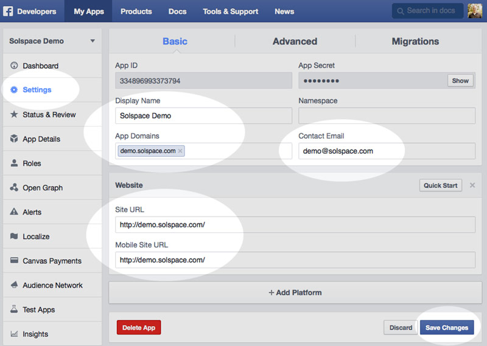

Creating a Facebook App
In order to use the Facebook Connect module (FBC), you'll need to create a Facebook App on the Facebook site. The app will allow your site and Facebook to connect to each other. Facebook adjusts/changes their setup process very often, so this guide may not be exact.
- Login to Facebook with your usual Facebook account. Then create a Facebook App for your site on Facebook.
- Click on the Add a New App button.
- You'll be presented with a window that will ask you what kind of app you'd like to create. Select Website from the list.
- You'll then be taken to a new page that asks you to choose an existing App or type the name of a new one you'd like to create. At the top right area, just click on Skip and Create App ID button.
- In the window that pops up, fill out the form and click Create APP ID button.
- Facebook will likely load a CAPTCHA for you to solve. Then click Continue.
- You'll then be presented with an overview of your app. Click on the Settings button on the navigation menu on the left.
- On the Settings page, fill out the form as necessary. For the App Domains field, enter the domain(s) you will be using FBC on.
- Click on the + Add Platform button and select Website from the options. Fill out the Site URL and Mobile Site URL fields with the site address you intend on using Facebook Connect on. Then click Save Changes button. 
- Click on the Status & Review button on the navigation menu on the left.
- On the Status & Review page, it gives you options to submit permission items for review. If you intend on using/requesting any information other than basic profile info, the users' email address and friends list, you'll need to work through this form. For example, if you wish to allow users to publish content such as EE comments to the users' Facebook profile (publish_actions), then you'll need to request permission from Facebook here.
- Once you're done (or if you do not need to request any additional permissions), at the top of the page, click on the large radio option to make your app live.
- Go back to the main page by clicking on the Dashboard button on the navigation menu on the left.
- Ensure that the status of the app is live (should see a green live circle).
- Take note of the App ID and App Secret code that Facebook has generated for you, as they need to be entered into your Preferences tab of the FBC control panel area.

- In your ExpressionEngine control panel, go to the Preferences tab in the Facebook Connect module CP area:
- copy the App ID value into the Facebook App ID field.
- copy the App Secret value into the Facebook App Secret field.
- The rest of the settings for the Facebook app (on the Facebook page) are not important to the Facebook Connect module, but you can fill out some of them if you wish.
{kind=link}
You're finally done!